Chapter-7
两湖山水·展开最美的水墨长卷
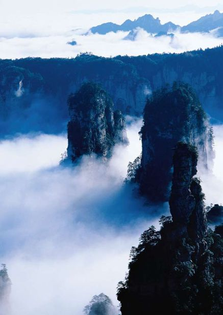
湖北
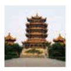
Hubei·亘古及今
历史从不以晦涩的姿态出现，所以神农架的野人便拥有了最大限度的自由；历史从不忘却悲戚，所以便有了“白云千载空悠悠”的慨叹；历史从没忘记江湖，所以武当山上的儒雅少年才会频频张望，等待着结一段道缘……
神农架
Shennongjia
诡 异 的 美 丽
这里是一片特别的地域，充满了未知与神奇。在踏入的瞬间，你也许恨不能就此隐居于此，成为那群中的一员。
这里有山，有野人，有奇珍异果，有数不尽的生灵。层峦叠嶂间，丛林密织间，自然幻化成一顶硕大的保护伞，“神农架”。
放眼望去，神农架那通透着翠绿的美，让人身心陶醉。在这里，有数不尽的高山峡谷，更有被誉为“华夏第一峰”的神农顶，其中有原始森林、千年老杉。
图片也许不足以形容神农架的美，因为那里仍然是一块充满野性与未知的地方。
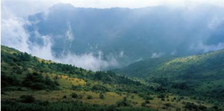
神农架是人间天堂，或是班得瑞乐曲中的“仙境”。不用寻其芳踪，芳踪自来，不用窥起本源，本源自现。雨后的神农架，更是显出无尽的妩媚。一座座山峦，云雾缭绕其间，隐约中看到山峰的面庞，却不敢确定视角中的是不是真切的山。暂且把这云雾当成仙气，暂且将自己想象成为羽化而登仙。晴空过后，碧空如洗，空中彩虹高挂，神农架显出愈加迷人的美丽。那斑斓的色彩摄人心魄，淡淡的云雾与彩虹的嬉戏中，更显出一份难得的轻松。
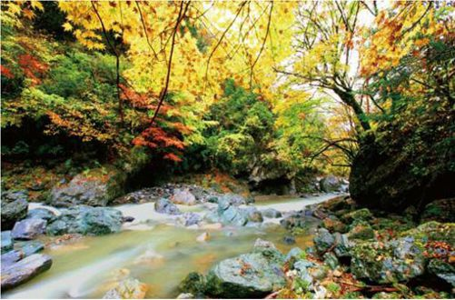
神农架除了野人，还有许多神奇和美丽的所在。
秋天是收获的季节，也是神农架采摘圣果的季节。那本是大自然的收获，无论是森林还是溪流，无论是动物还是植物。漫山遍野的果实让动物们储备过冬，飞禽走兽在这个时节百感交集，生怕错过了每一场盛宴。一片金黄中，成片的山峦都浸染成统一的色泽，整齐得让人折服，美丽得让人赞叹。
接着便是皑皑白雪的冬季。神农架之所以美丽，不仅因为那一份宁静，更因为寒冷中那一片白色的光芒耀眼。冬日的神农架，是冰雕玉砌的世界，且充满了无尽的自然与美丽。这个时候，玉树琼枝分外撩人，不见了溪流的潺潺，不见了动物的咆哮，却依稀能感受到那冰层下悸动的生命，以及那洞穴中慵懒的打鼾……
武当山
Mount Wudang
胜 境 仙 山
一直以来，在金庸大师笔下，武当派的英俊逍遥让人们心生向往。而承载着这份向往的武当山，更因其独有的奇特与险峻，声震八方。
武当山位于湖北省西北部，是著名的道教圣地。在这“方圆八百里”中，它东接襄樊，西靠十堰，依着一片原始森林，和着人工淡水湖。
“亘古无双胜境，天下第一仙山”，人们对于武当山有着颇高的评价。著名的仙山福地，除了厚重的地气，更有着特殊的地理环境及天然优势。高险中透出挺拔巍然，幽深中流出溪水潺潺。那磅礴的气势，犹如飞龙在天；那娇羞的美丽，犹如仙女下凡。
武当山，感觉起来总有股侠气，也许是因为读金庸的小说的缘故。
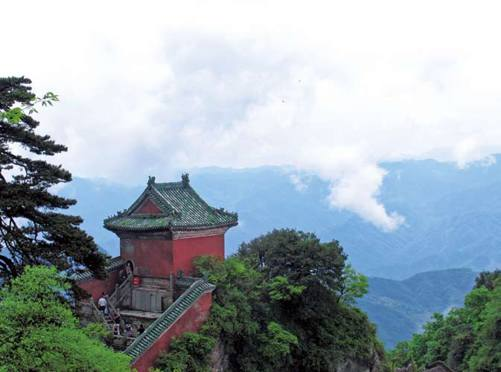
太子坡，作为武当山的第一个景点，注定因其别样的气势而深入人心。这里又称为“复真观”，是武当山主要的山道之一。相传，静乐国的太子15岁便入山修道，住在这里。五层楼高的建筑，巍然挺拔，一根木头支起十二根横梁，是中国建筑史中的绝笔。
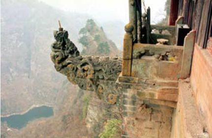
如果说山水的武当是一种传奇，那么它古老的建筑艺术也很值得一书。
如果直奔主题，便是去往天柱峰的金殿。一路上，水声潺潺，鸟声幽幽，所见之处，皆是繁茂的景色，让人不由得神清气爽。
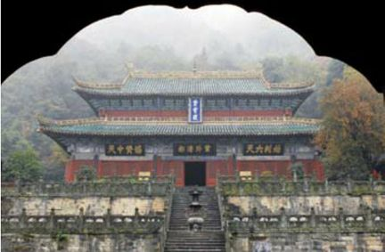
武当山紫霄殿
武当山的金殿又叫做“金顶”，位于主峰天柱峰之顶，建于明永乐十四年。它是中国迄今为止现存的最大铜铸建筑物。整个金殿异常开阔，进深各三。整个结构仿木建造，使用的却是铜铸流金。放眼望去，重檐叠脊中显出气势恢宏，翼角飞翘是炫耀无限神采。不知该用怎样的语言来形容这金碧辉煌的殿堂，那精细的建筑工艺让人喟叹，就连周围环绕的石雕栏杆都显出几分精湛。
在金殿内，神像、供器同为铜铸。真武帝君供奉在正中央，尽显魁梧雄姿。这是武当山上现存的最唯美、最细腻的一尊真武神像，人们纷至沓来，最主要的原因就是为了一睹神像的容颜。
来到武当山，晨观日出，暮阅云海，人生最快乐的事情，也不过如此。武当，这名字犹如少年心中一粒种子，在湿润的空气中便能穿透岩石，生根发芽；武当山，这刚毅与壮美结合得天衣无缝的山麓，登顶一次，便永世难忘。
黄鹤楼
Huanghe Tower
千 载 空 幽
故人西辞黄鹤楼，烟花三月下扬州。孤帆远影碧空尽，唯见长江天际流。
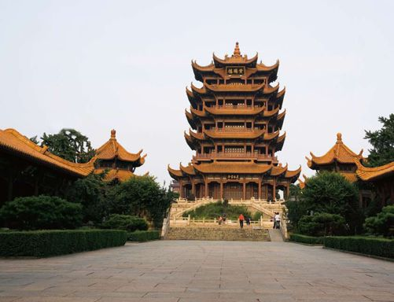
今天的黄鹤楼不是当年崔颢时的黄鹤楼，因为它已经几经翻新。
江南三大名楼中，除了湖南的岳阳楼，江西的滕王阁，便是巍峨耸立在武昌市的黄鹤楼。一直以来，它被后世推崇为“天下绝景”。相传本是为了军事而建，而在时光长河的涤荡中，这里逐渐成为了文人墨客的必游之地，并留下多首脍炙人口的诗篇。
传说中的黄鹤楼，据《极恩录》的记载，本来是辛氏开的酒店。一个道士为了感激她的千杯恩德，遂在临行之际提笔而画，在墙壁上绘了一只鹤，说这鹤能够翩翩起舞，让食客兴致勃勃。从此酒店生意兴隆，一下便过去10年。一天，道士再次来到这里，笛子吹响的刹那，道士跨上黄鹤飞天而去。辛氏为了纪念道士，便将这里取名为“黄鹤楼”。
武汉三镇
武昌、汉阳、汉口被并成为“武汉三镇”。东汉末三国初，孙权为了与刘备夺荆州，便把都城从建业迁至鄂县，并更名为“武昌”。汉阳的来历源自古语中“水北为阳，山南为阳”，因为当时汉阳在汉江的北边，龟山的南边。而汉口，直到明代汉水改道，才独立发展起来。
黄鹤楼景区中，穿过古乐宫后，拾级而上，到处是一片片葱茏的绿。呼吸着清新的空气，人们遥望着频频出现于梦境中的黄鹤楼。
“月色无玷，江流有声”，在白云阁内的柱子上，八字映出，似乎古人在此望月，才留下这样的感慨。前行的途中，黄鹤楼的尊容逐渐浮出水面，那朦胧的轮廓，却难掩巍峨之气，夕阳下，美得一塌糊涂。
一楼的牌匾上，“画卷乾坤”四个大字先声夺人。走进黄鹤楼内，不禁被那副对联所深深吸引：“爽气西来，云雾扫开天地憾；大江东去，波涛洗净古今愁。”一番怆然，一番思古，掩面而思，这样的对子着实让人万千慨叹。二楼楼内，无数字画对联被展列其间。继续向上，四楼大厅的四壁挂着当代名家的作品，除此以外还有配备完善的文房四宝，为的是供游人抒发感情。
站在黄鹤楼的长廊信步游走，感受远处长江大桥的气势凌人，却猛然发现那气势中的凌人之气不过是外在，一种姿态，却不是内心的全部。
黄鹤楼近景
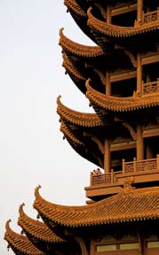
站在黄鹤楼之上，似乎是将视角重新打开，以旁观者的感官来体验视线中的一切，感性不再隐隐作祟。一阵悠然的轻风拂面，清醒之中，仿佛领悟到人生的真谛，对于历史的评价，对于人世的评论，对于自身的探索，又重新上升到新的一阶。
夕阳中，回眸凝望黄鹤楼，心中的感受不知该从何说起。黄鹤楼在那团橘红色的点缀中变得柔和，却深深触动人们的心弦。
“昔人已乘黄鹤去，此地空余黄鹤楼。黄鹤一去不复返，白云千载空悠悠……”难怪，墨客会留下如是慨叹。
湖南
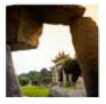
Hunan·锦绣如娟
湘中见水，见林，见美景，单是那一个秀气的字体，便能展开一幅水墨画卷。那画卷瞬间又幻化回整个湖南。寻踪而来的人，皆是一个个“醉翁”，游历之间，在意的是那山水中的一抹秀色，秀色醉人，人醉风景。
洞庭湖
Dongting Lake
别 有 洞 天
在那一片秀色中，连水中的点点风帆都染上了芦苇的草香，整个湖面，绮丽无比……
天地之间，洞庭湖秀美地横卧在那里。上有蓝天白云，下有芦苇相伴，轻风拂过，如同轻柔的吻轻轻拂过洞庭湖的面颊。
洞庭湖是中国第二大淡水湖，位于湖南之北，长江的南岸。自古以来，这里便以平坦的地势肥沃的土壤养育着岸边的居民。有言道，“洞庭天下水”。的确，这里四季气候温和，更有充沛的雨水，于是沿岸那大片大片的稻米地、棉花田，便能成长成为繁华锦簇的一大片独特风景。
在古代，洞庭湖有诸多名衔，“云梦泽”便是其中之一。“气蒸云梦泽，波撼岳阳楼”，曾是孟浩然笔下的名句，也是对于洞庭湖的描述。洞庭湖本由4个风景各异的湖泊相连接而成，且有着“洞庭湖外有湖，湖中有山”之说法。
在清晨湿润的空气中驾起一叶小舟，乘舟湖面，感受那细细的文风，眼看着风儿吹落晨露，将露水吹入洞庭湖水，那样细微的美丽，让人的心中激起一阵涟漪。
到了傍晚，鱼群纷纷跳出水面，鸥鹭潜翔时又是别样一番风景。渔歌响彻湖畔，橹声悠悠不息，一切的一切如梦如幻，此情此景，必然定格在记忆深处。
洞庭看景中，无数传奇故事浮出水面。浩渺如烟波的历史中，数不尽的故事藏在其间，所见之时，真实得如同面对面。
忧国忧民的屈原曾漫步湖边，留下千古华美的诗句。数年来，数不尽的文人墨客到此游历，不只是为了欣赏那份秀美，更是为了留下脍炙人口的诗篇。从此，洞庭湖便多了一份诗意的情怀，越加地优雅，越加地娟秀。
因为有人，历史才能与洞庭相撞，人与自然才能完美地结合；因为有人，那轻轻划过的橹才能尽显悠然，尽显优雅与浪漫的风范。
这便是洞庭湖水，滨湖风光秀丽如画。水鸟翱翔中，百舸争流时，水天一色间，那雄伟壮观的姿态，就这样凝结成晶。
优雅的洞庭湖大桥在夕阳中显得默默多情。
张家界
Zhangjiajie
奇 幻 峻 秀
一片奇幻的峻秀中，大自然的鬼斧神工被发挥到极致。纵使千遍游历，仍不能挥去心头那片云雾缭绕……
处处青山中，张家界悄然伫立。在36000亩的范围内，大小2000多座山峰，几乎都是异峰突兀、拔地而起。四周似刀劈斧砍一般，尖锥形、柱状体，千峰争奇，迷离的云雾和潮湿的空气扑面而来。
层层叠叠，郁郁葱葱，满眼都是拔地擎天、形态各异的“石笋”。张家界的四周都竖立着奇峰怪石，有的像迎面扑来的“巨礁”，有的像冲天跃起的“恶鲨”，有的像秦明手中的“狼牙棒”，有的像孙悟空索取的“定海神针”……时隐时现，扑朔迷离。
黄石寨是张家界美景最集中的地方，天书宝匣、定海神针、南天一柱、金海探龟等，都是天造地化的景点，不仅好看，还有很多美丽的传说与故事，听着，看着……让人们似乎进入了神奇的神话世界。
在黄石寨的摘星台，似乎真的可以伸手摘到天上的星星，伸出手臂，脑中浮出诗句——不敢高声语，恐惊天上人。静静地站在摘星台上，闭上眼睛许个愿，感受心中的那种静谧，似乎真的就这样进入梦游的世界。
张家界秀丽的山景
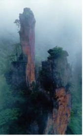
金鞭溪，是来张家界另一处必去的地方，金鞭溪因位于金鞭岩下而得名。金鞭岩是一座山峰，从山脚到岩顶，像刀劈出来的一般，由很多石柱样的山峰组成，其中一只石柱高悬如同一只耸立的金鞭，直冲云霄，据说这是秦始皇扔到这里的鞭子，非常壮观，满是阳刚之气。金鞭岩紧靠一座酷似雄鹰的巨峰，凌空展翅，构成了“神鹰护金鞭”的神奇景色。
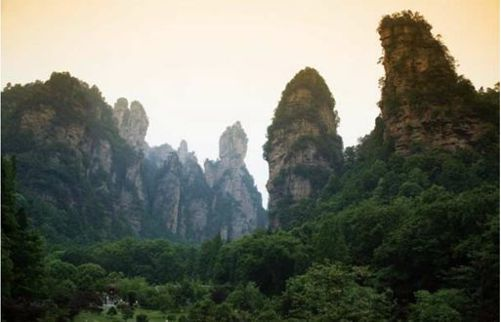
去了张家界，就绝不会后悔，因为这里的山川的确引人入胜。
金鞭岩下，一条美丽狭长的溪流，这就是金鞭溪。金鞭溪常年碧水长流不断，溪边林荫路弯弯曲曲沿溪而进，两岸林立的山峰，清澈见底的溪水，溪中各色卵石，在水中闪亮。溪旁的树林和草丛，构成了一个悠闲的浏览去处。
到张家寨，一定不能错过的景致便是夫妻岩。传说，土家山寨有一对勤劳的夫妻，他们相亲相爱，终年在一起植树育林，造福世人，山妖嫉妒他们和睦恩爱，便施魔法把他俩分开。丈夫被打入黄龙洞水牢，妻子被投进锅场火炉。玉帝心生怜悯，便将二人点化在金鞭溪源头——夫妻岩，作为天下夫妻的榜样。
遥望两座巨大山峰，外形酷似一对夫妻，头挨着头，身靠着身，头发、鼻子、眼睛、嘴唇栩栩如生，就连眉毛和牙齿都能看得清清楚楚，男的英俊潇洒，女的眉清目秀。相传，但凡拜过夫妻岩，爱情都会得到庇护。
张家界，谁能想到，一片山石林立间，竟有如此的温柔？这奇幻俊秀的地域，似乎得了苍天的特别恩宠，让人们在游历之时，不断慨叹，不停流连。即使在离去之后，依然在口中念念，在午夜梦回时，混淆了当下与曾经，再次迷蒙在它的美丽……
家祭祀
土家人祭土地神，是为了祈求来年五谷丰登六畜兴旺，同时也保佑村人平安，驱除邪恶。对于祭祀，土家人十分虔诚，在不大的地区中，每村都有至少一个土地庙。有的用大理石搭建，也有的用粗毛板搭建，但搭建目的都是为了祈祷。
衡山
Mount Hengshan
祈 愿 纯 真
衡山苍苍入紫冥，下看南极老人星。
回飚吹散五峰雪，往往飞花落洞庭。
——李白
放眼衡山，一片葱绿，野花娇艳地竞相胜放，碧草快乐地舒展腰身。那石头铺成的小路，水声潺潺的溪流，恰似一曲空灵的音乐，沁入人心，使人感到心旷神怡。
距离衡山最近的景致名曰“梵音谷”。那是个仙乐缭绕的地方，佛教乐曲空幽地飘荡在空气中，旋律婉转而流畅。听着那曲，仿佛心中的浮沉逐渐退去，心情变得无比平静。
视线中猛地突兀出一座白板桥，且有一个古色古香的小亭子。桥下湖面中依稀映出金色的小鱼，在温暖的湖水中自由嬉戏。仿佛芸芸众生，在一片怡然自得的景致中享受着最为返璞归真的休憩。
衡山南岳大庙
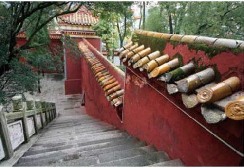
一直以来，衡山以宗教圣地闻名遐迩，香火鼎盛，到处弥漫着一缕馨香。置身在这样的环境中，凡尘杂念被退却一空，心中就只怀着虔诚，怀着神圣。带着美好的愿望来这里上一炷香，祈祷家人幸福，朋友安康……在衡山，无论是神州祖庙还是麻姑仙境，再或是竹林道观与玄都观，只是听名字，虔诚的心境已然感受到几分超脱。每次祭拜，都是一次灵魂的净化。
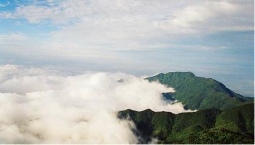
衡山的云海与黄山的云海一样出名。
几个小时的攀登过后，终于抵达山顶。如果是凌晨时分，看着东方那轮朝日喷薄而出，朝着初升的太阳喊出心中的话，此情此景，牢记一生。
临走前，来到祝融殿，这是无数前来拜访的游客心目中的终极向往。清晨的衡山，本是小小的殿里却是分外地热闹。无论男女老幼，皆虔诚地跪拜在佛祖面前，香烟缭绕中，一批又一批的香客前赴后继，皆是为着这里的神奇。相传，这里的香火甚是灵验，不信你看那高挂着的锦旗，上面“有求必应”的字迹分外醒目。
虽然香火钱不多，但是毕竟是一份心意。而在这里上香，其实是为心灵找到一个归所，保持一份圣洁的纯真，在世事纷扰中仍能忠于内心，忠于自我。
一游衡山，心中感念。二游衡山，祈愿灵验。阳光透过树荫照射到脸上，温暖的气息扑面而来。在这一片难得的葱绿中，心灵，也变得更为纯净。
水帘洞
水帘洞位于衡山山下。帘影高悬，飞瀑如泻。宋代诗人毕田曾吟诗一首，专门用于称赞水帘洞之奇妙：“洞门千尺挂飞流，玉碎珠帘冷喷秋；古今不知谁卷得，绿萝为带月为钩。”
凤凰古城
Ancient town of Fenghuang
秀 美 如 娟
沈从文的笔下，凤凰这个美丽的地方就如同书中的主人公翠翠，处处透露出天真与神秘。
猛洞河
猛洞河是位于凤凰古城境内一处风景区，全长超过100千米。景区面积达255平方千米之广，平湖两岸尽是耸峙的石壁与参天的古木。在这里，有断臂石、小龙洞、仙女峡等15个景点，供人们一一游历。
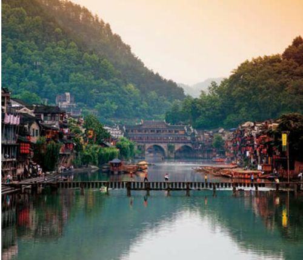
沱江两岸，凤凰人自由自在地生活。
据说世界上，有两个灾难深重却又顽强不屈的种族，他们的历史，几乎是由战争与迁徙来谱写的，那就是中国的苗族人和分散在世界各地的犹太人。聪明的苗族人，在凤凰扎下根，每日望着江中叠翠的南华山麓倒影，听着山间的暮鼓晨钟齐鸣，过着简直是神仙般的日子。而凤凰这块山水灵地，也孕育着世世代代的苗族人。
沱江是凤凰的灵，它静静地将凤凰两岸的民居分开，碧绿的江水蜿蜒而去，沿着吊脚楼，流向虹桥。虹桥一如其名，犹如一弯长虹横跨在沱江之上。虹桥建于明洪武时期，是凤凰现存最大的古桥，如今它也是凤凰最为繁华的地方。
在虹桥右侧百米之处，耸立着一座古意盎然的城楼，俗称“北门城楼”。如今这里熙熙攘攘，到处是摆着小摊的凤凰人，叫卖着凤凰的特产。沱江水，夹杂着各种各样的，带着浓浓湘音的叫卖声，让你切切实实感到，凤凰是一个烟火小镇。
凤凰建筑中，最有风情的便是沱江边的吊脚楼。凤凰的吊脚楼有两种形式，一种是依山而建的；另一种就是依偎着沱江的临江吊脚楼。其中，临江的吊脚楼最有风情，清澈的江水在脚下流过，青如罗带，有一种奇妙而神奇的感觉。
近树掩映着远山，捶衣声响断了石桥，水车沉寂了几十年，小舟过处，粼波轻轻浅浅……生活在这里的人，童年在河水里嬉戏，老了在河边晒太阳，河水便串起了一生的记忆……
根根木柱撑起一栋栋小巧玲珑的房子，房中甜蜜温暖的苗家女子，感受到的又是另一种风情。
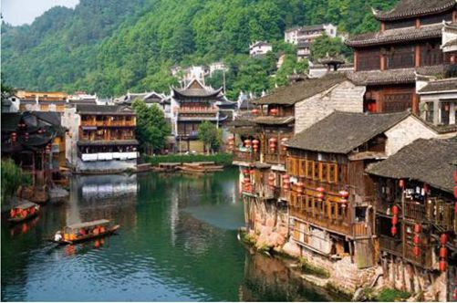
德夯
Dehang
异 域 风 情
四季如春，气候宜人，如果可以选择，希望来世成为那娇柔美丽的苗家女，在一片秀丽迷人的风光中，唱起山歌，穿梭在吊脚楼间。
苗寨德夯，作为湖南的一处最别致的风景，因其独特吸引住太多游客的目光。筒车、古渡，在绝壁高耸的山脚下怡然自得地生长，每每触及，皆是一种“采菊东篱下，悠然见南山”的清幽。
在苗语中，“德夯”的意思被翻译成“美丽的峡谷”。作为中国地道的田园风情，吊脚楼的美丽总是让人欲罢不能。泛起小舟，在犹如原始森林般的秀丽中荡漾。
美丽的苗族服饰，嘹亮的情歌为媒，苗族，一直以来遵循着自己独特的生活方式。种田或是养蚕，纺纱或是织布，当他们穿着自己编织的工艺品穿梭于一片葱茏之中，那巧夺天工的技艺连大自然都佩服得五体投地。
古老纯朴的民俗风情吸引了四方来客。来苗家作客，住一住吊脚楼，或是拦门对歌，再或是赏赏苗族鼓舞，抑或是灯火送客，每个项目都洋溢出浓浓的热情。细腻的流水，湛蓝的湖泊，憨直善良的苗族风俗，轻歌曼舞中，德夯就这样走入人们的记忆深处……
穿着传统服装的苗族女子。
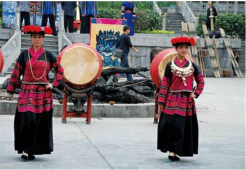